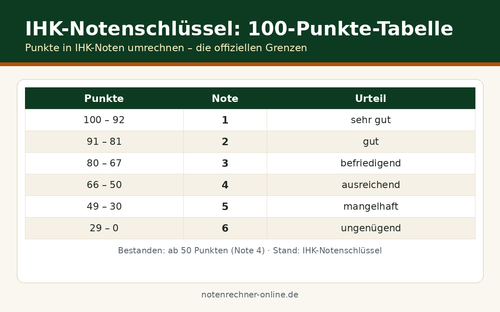

Mündliche Ergänzungsprüfung bei der IHK: Ablauf, Gewichtung und Beispiele
Die schriftliche IHK-Prüfung ist mit „mangelhaft“ ausgefallen – ist jetzt alles verloren? Nicht unbedingt. Wir von der Notenrechner-Online-Redaktion erklären die mündliche Ergänzungsprüfung, mit der sich ein mangelhafter Prüfungsbereich unter bestimmten Voraussetzungen doch noch bestehen lässt. Prüfen Sie Ihre Chancen vorab mit unserem IHK-Punkte-Check.
Das Problem: eine 5 im schriftlichen Teil
49 Punkte, wo 50 nötig gewesen wären – oder 38 Punkte nach einer völlig verkorksten Klausur. In dieser Lage stellt sich die Frage, ob es außer der Wiederholung in einem halben Jahr noch einen anderen Weg gibt. Den gibt es: die mündliche Ergänzungsprüfung, ein rund 10- bis 15-minütiges Prüfungsgespräch, das die schriftliche Leistung ergänzt statt ersetzt.
Wann ist eine Ergänzungsprüfung möglich?
Die Regeln stehen in der Prüfungsordnung Ihres Ausbildungsberufs; die Grundlinien sind überall ähnlich:
- Mangelhafte Leistung: Der schriftliche Prüfungsbereich wurde mit 30 bis 49 Punkten („mangelhaft“) bewertet.
- Kein „ungenügend“: Bei unter 30 Punkten ist in den meisten Berufen keine Ergänzung mehr möglich.
- Nur ein Bereich: Sind zwei oder mehr Prüfungsbereiche nicht bestanden, hilft die Ergänzungsprüfung nicht – dann steht die schriftliche Wiederholung an.
- Freiwillig: Niemand muss teilnehmen; mit der Ergebnismitteilung erhalten Sie ein Anmeldeformular.
- Kein neuer Versuch: Die Prüfung ist über die Prüfungsgebühr abgedeckt und zählt nicht als zusätzlicher Prüfungsversuch.
Die Gewichtung: schriftlich zählt doppelt
Das schriftliche Ergebnis wird doppelt, die mündliche Ergänzungsprüfung einfach gewichtet – also im Verhältnis 2:1. Das Gesamtergebnis des Prüfungsbereichs berechnet sich so:
Wie viele mündliche Punkte brauche ich mindestens?
Zum Bestehen braucht der Bereich 50 Punkte, also muss gelten: 2 × schriftlich + mündlich ≥ 150. Daraus folgt die Faustformel:
| Schriftliche Punkte | Benötigte mündliche Punkte |
|---|---|
| 49 | 52 |
| 45 | 60 |
| 40 | 70 |
| 35 | 80 |
| 30 | 90 |
Die Tabelle zeigt brutal ehrlich: Je schwächer die schriftliche Leistung, desto stärker muss die mündliche ausfallen. Bei 30 schriftlichen Punkten braucht es mündlich 90 – also eine glatte 2.
Durchgerechnete Beispiele
Gesamtergebnis = (2 × 45 + 68) ÷ 3 = 158 ÷ 3 = 52,7 → gerundet 53 Punkte. Das ist „ausreichend“ – der Prüfungsbereich ist bestanden. Die Rechnung bestätigt die Faustformel: Bei 45 schriftlichen Punkten waren mindestens 60 mündliche nötig (150 − 90 = 60), erreicht wurden 68.
Gesamtergebnis = (2 × 35 + 55) ÷ 3 = 125 ÷ 3 = 41,7 → gerundet 42 Punkte. Das bleibt „mangelhaft“ – nicht bestanden. Nötig gewesen wären 150 − 70 = 80 mündliche Punkte. Das Beispiel zeigt: Eine mittelmäßige mündliche Leistung reicht bei schwacher schriftlicher Vorlage nicht; die Ergänzungsprüfung verlangt eine deutliche Steigerung.
Stolperfallen rund um die Ergänzungsprüfung
Eine weitere Falle ist das Sperrfach: Ist der mangelhafte Bereich in Ihrem Beruf als Sperrfach definiert, führt an der Ergänzungsprüfung kein Weg vorbei – ein Ausgleich durch andere Bereiche ist dort ausgeschlossen. Und in Berufen mit gestreckter Prüfung lassen sich Bereiche aus Teil 1 grundsätzlich nicht mündlich ergänzen. Prüfen Sie deshalb immer zuerst Ihre Ausbildungsordnung.
Kostenlose Spickzettel & Tabellen zum Download
Wir haben die wichtigsten Formeln und Tabellen für dich als kostenlose PDFs aufbereitet – ausdrucken, ins Heft kleben, fertig. Alle Downloads sind gratis und ohne Anmeldung.

Häufige Fragen
Wann kann ich eine mündliche Ergänzungsprüfung machen?
Wenn ein schriftlicher Prüfungsbereich mit „mangelhaft“ (30 bis 49 Punkte) bewertet wurde und die Ergänzungsprüfung zum Bestehen erforderlich ist. Bei „ungenügend“ oder mehreren nicht bestandenen Bereichen ist sie in der Regel ausgeschlossen.
Wie wird die Leistung gewichtet?
Das schriftliche Ergebnis zählt doppelt, die mündliche Ergänzungsprüfung einfach: Gesamtergebnis = (2 × schriftlich + mündlich) ÷ 3. Zum Bestehen braucht der Bereich 50 Punkte.
Wie lange dauert die mündliche Ergänzungsprüfung?
Üblicherweise 10 bis 15 Minuten vor einem Ausschuss aus drei Prüferinnen und Prüfern. Die Fragen können sich auf alle Themen des Prüfungsfachs beziehen; eine Aufgabenstellung zur Bearbeitung gibt es in der Regel nicht.
Kann ich mich damit von einer 4 auf eine 2 verbessern?
Nein. In bereits bestandenen Fächern ist eine mündliche Ergänzungsprüfung nicht möglich – sie dient ausschließlich dazu, einen mangelhaften Bereich doch noch zu bestehen, nicht der Notenverbesserung.
Was passiert, wenn ich auch mündlich durchfalle?
Dann bleibt der Prüfungsbereich „mangelhaft“ und Sie erhalten einen Nichtbestehensbescheid. Sie können den Bereich zum nächsten Termin schriftlich wiederholen – die versuchte Ergänzungsprüfung zählt dabei nicht als verbrauchter Versuch.
Bestehenschance jetzt durchrechnen
Schriftliche Punkte eingeben und sofort sehen, was mündlich mindestens nötig wäre.